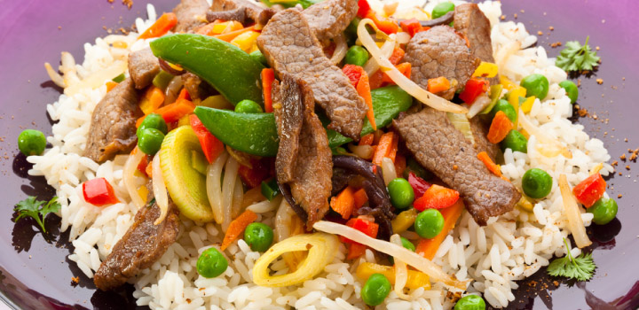

Chinese Stir-Fry Tips
Preparation
Prepare all the ingredients and seasonings ahead of time. The whole process uses the highest heat on your stove so you shouldn't try to prepare food while you're stir-frying.
For even cooking, cut all the ingredients the same size. If you're not following a recipe, cut all the ingredients into bite-sized pieces.
Cooking
Pre-heat the wok on medium-high heat for at least a minute before adding oil. After adding cooking oil, move the wok around to coat the entire bottom. The oil heats faster this way.
Stir fry the fresh seasoning ingredients first like garlic, spring onion, chili and ginger to take advantage of their flavors.
Stir-fry meat at a high heat to seal in the juices. Experiment with cooking the meat first, setting it aside while you stir-fry the vegetables, and then adding the meat back just before the vegetables are done cooking. Remove the meat from the wok when it changes color. For example when the redness in the beef is gone. This is when it's cook most of the way through, so it can finish cooking when you add it back into the wok. This will help prevent the meat from overcooking.
Stir-fry vegetables according to density, with the densest vegetables being stir-fried first and for the longest time. Denser vegetables such as broccoli and carrots require more cooking time than green leafy vegetables like bok choy.
Finishing Touches
Season the dish to taste after cooking is complete. Serve the dish immediately.
image source